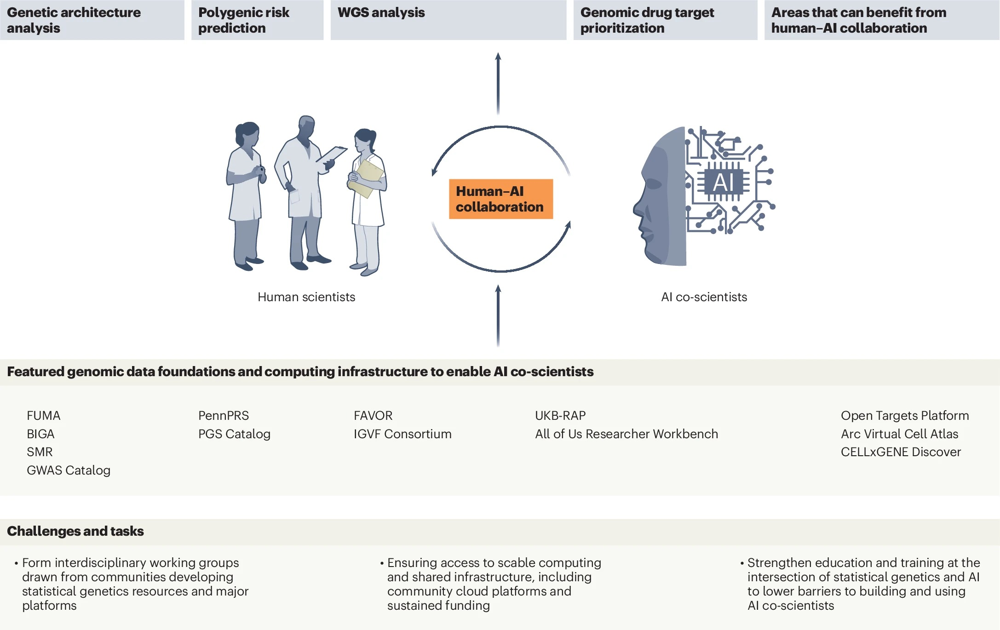

Q&A
That's a great question and one I think about a lot in this work. The way I see it, there are tasks where the current AI models are essentially able to handle execution very well given current intelligence levels and base model capabilities, such as correctly querying the GWAS Catalog, submitting jobs to FUMA, or running a PennPRS pipeline with the optimal data resources. These are bounded and procedural, and if something goes wrong it is usually immediately obvious. I'm more comfortable letting the AI execute those independently.
Where I get more cautious is when the agentic system shifts from doing to interpreting. The moment it starts reasoning about what results mean biologically, or drawing conclusions across specific diseases, a human expert may need to be in the loop (for example, as a reviewer), because that's where domain expertise matters most and where confident-sounding errors are hardest to catch. I also draw a hard line around clinical application. You can automate PRS model training, but when those scores start informing healthcare decisions (such as higher genetic risk), the error costs become substantial in a way that makes human-in-the-loop verification necessary.
That said, these boundaries aren't fixed. They will likely evolve as base models and data resources improve, and they'll need to be systematically benchmarked and calibrated depending on the specific scientific question, the base model's performance, and how the agent is designed. What requires human oversight today may not in a year's time, and the reverse is equally possible as we deploy these systems in increasingly complex settings, pushing toward a higher level of scientific intelligence.
This is an important question. At its core, we need to train these agentic systems to become true masters of domain-specific statistical genetics tasks. General-purpose AI models may not naturally internalize the assumptions underlying GWAS or PRS workflows, things like LD-reference panel matching, ancestry-specific considerations, or knowing when a particular method simply shouldn't be applied. Addressing this will likely require additional training on domain-specific data, enabling the agent's reasoning to operate more like a domain expert (rather than a capable generalist).
This also means building comprehensive knowledge of the platforms themselves, GWAS Catalog, FUMA, PennPRS, or FAVOR, not just the ability to call their APIs, but a deep understanding of their assumptions, their limitations, and the contexts in which they should or shouldn't be used. Designing targeted benchmarks and incorporating reinforcement learning-based reward signals are promising pathways toward achieving this level of mastery.
In practice, we can approach this in stages. Initially, misapplication risks can be partially mitigated through careful prompting and infrastructure-level constraints. But ultimately this can be viewed a training problem, and the community needs to invest seriously in building the evaluation datasets and benchmarks that make that mastery rigorous and verifiable. The goal is AI agents that don't just execute these tools correctly, but understand them as deeply as a domain expert would, including knowing when not to use them at all.

This is a concern that needs to be taken very seriously, and I think two things need to work together to address it effectively. First, statistical rigor needs to be hardwired into the agent's design, multiple testing corrections, pre-specified analysis plans, and strict reporting thresholds should be built in as non-negotiable constraints, not left to downstream interpretation. But statistical rigor alone isn't enough. Agent design needs to go beyond statistics and incorporate genuine biological and medical domain knowledge. For example, an agent that only knows how to run a GWAS pipeline is fundamentally different from one that understands genetics of disease biology, tissue and cell-type specificity, and biological plausibility. That deeper knowledge is what allows the AI system to focus not just on “is this genetic variant statistically significant?" but on "does this variant actually make biological sense?", which is the question a domain expert would ask first and a more important one.
This is a great question. One critical benchmark we can frame around is a domain expert replication test: can the AI co-scientist, given the same inputs and research question as a trained domain scientist (or a team of them), arrive at the same research findings? Not just produce correct outputs, but demonstrate the reasoning process that a domain expert would recognize as sound. This matters because passing a narrow performance benchmark on a specific task, such as a QA question, is much easier than demonstrating the kind of generalizable scientific judgment that responsible use actually requires in real research settings.
Within that test, I think the community needs benchmarks across at least three dimensions. First, methodological correctness: Does the agent apply the right tools under the right assumptions? Second, biomedical coherence: Does it distinguish statistically significant noise from biologically plausible findings? Third, translational impact: Can its outputs meaningfully inform drug target prioritization or disease risk prediction in ways that genetic findings are expected to deliver? These benchmarks need to be co-developed by interdisciplinary scientists, as defining what responsible AI-assisted genetic discovery looks like is itself a scientific and community question, not just a technical one.
Bingxin Zhao is an assistant professor in Statistics and Data Science at the Wharton School of the University of Pennsylvania, with a secondary appointment in the Department of Medicine at the Perelman School of Medicine. His research develops statistical and AI methods for science and medicine, with a focus on integrating multimodal data, such as imaging, genomics, and knowledge graphs, to enable discovery and translation. He is also working on unifying statistical rigor, software engineering, and agentic AI to build practical systems for scientific and medical research.